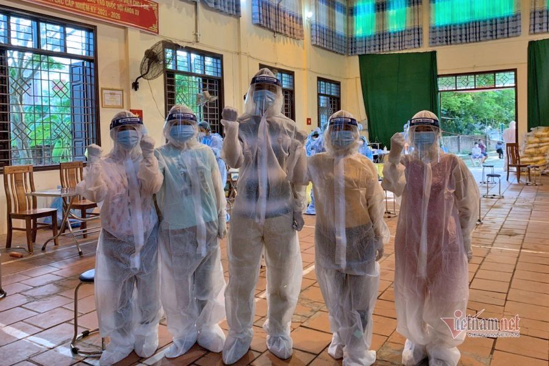
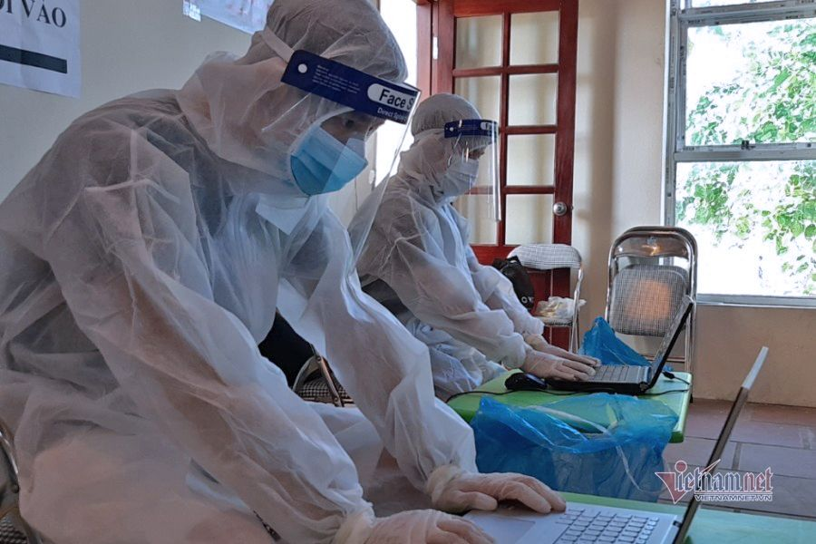
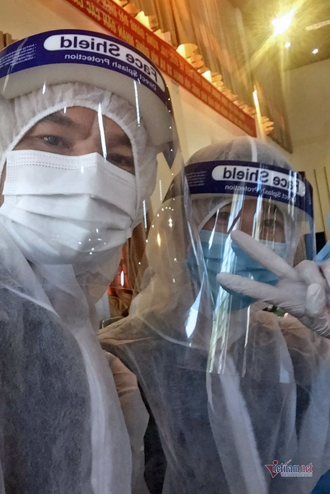

Hết cách ly, nhiều thầy cô xin vào 'điểm nóng' chống dịch
Trước tình hình Bắc Ninh tiếp tục tăng số người mắc Covid-19, nhiều thầy cô ở Thuận Thành tình nguyện đồng hành, hỗ trợ cùng lực lượng y tế tham gia chống dịch. Trong số đó, có thầy cô thuộc diện F2 vừa hết thời gian cách ly.
Ngay sau khi được tập huấn kiến thức về phòng chống dịch Covid-19 và công tác nhập liệu, ngày 26/5, 12 thầy cô của Trường THPT Thuận Thành số 1 lập tức lên đường hỗ trợ các y bác sĩ ở điểm nóng theo lời kêu gọi toàn dân tham gia chống dịch.

Các thầy cô giáo ở Thuận Thành (Bắc Ninh) hỗ trợ cán bộ y tế chống dịch
Thầy Lê Nho Duy, Phó Hiệu trưởng nhà trường cho biết, trong số này, nhiều thầy cô từng thuộc diện F2, nhưng sau khi hết thời gian cách ly đã tình nguyện đăng ký tham gia chống dịch. Nhiệm vụ của các thầy cô là hỗ trợ đoàn xét nghiệm của Trung tâm Y tế huyện Thuận Thành trong công tác nhập liệu.
“Các thầy cô đều rất sẵn lòng, không quản ngại vất vả, khó khăn để chung tay đẩy lùi dịch bệnh. Khi biết ngành y tế đang rất thiếu lực lượng hỗ trợ chia sẻ công việc, thầy cô đều không ngần ngại đăng ký tham gia”.

Các thầy cô làm nhiệm vụ hỗ trợ nhập liệu
Tham gia hỗ trợ cán bộ ngành y tế nhập liệu tới tận đêm khuya, mặc dù cường độ làm việc liên tục, nhưng thầy Nguyễn Đăng Đức (Trường THPT Thuận Thành số 1) cho rằng, “điều đó không sá gì vì công việc diễn ra gấp gáp, do vậy, mỗi người cần phải cố gắng hơn một chút”.
Từng thuộc diện F2, sau khi khai báo và biết mình đủ điều kiện đăng ký, thầy Đức không ngần ngại xung phong tham gia.

Làm việc ở “điểm nóng” nhưng các thầy cô đều sẵn lòng tham gia
Dù nhận được đề nghị đi hỗ trợ tại “điểm nóng” trước khi xuất phát chỉ chưa đầy 1 tiếng, nhưng thầy Đức cùng đồng nghiệp luôn ở trong tâm thế sẵn sàng lên đường.
“Một đợt lấy mẫu ở mỗi xã sẽ có khoảng 3.000 – 4.000 mẫu. Do đó, cán bộ y tế phải làm việc liên tục trong suốt nhiều giờ đồng hồ cho đến khi lấy được hết mẫu.
Mặc dù thời tiết nóng bức, mệt mỏi nhưng không ai dám ngơi nghỉ. Tất cả đều gắng sức chạy đua theo thời gian do lực lượng y tế khá mỏng. Chúng tôi cũng không dám nghỉ ngơi để cùng chia sẻ những khó khăn chung trong công cuộc chống dịch của quê hương”.
Không chỉ riêng Trường THPT Thuận Thành số 1, trước đó, nhiều thầy cô giáo cấp tiểu học, THCS và THPT trên địa bàn Thuận Thành cũng sẵn lòng cùng chung tay hỗ trợ với ngành y tế. Không chỉ tham gia vào công tác đánh máy, nhập liệu, nhiều thầy cô còn trực tiếp tham gia vào đội hậu cần, phục vụ bữa ăn cho các cán bộ y tế đang tham gia chống dịch.